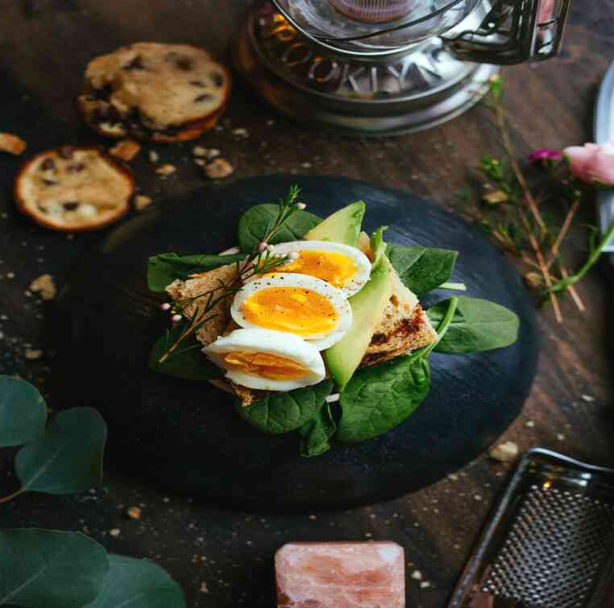

Make-up like a star. Ekaterina Klimova photos from the service See how make-up changes the appearance of a 40-year-old actress, in one case reducing, and in another adding to her years. If you have a similar type of appearance, use these tips: make-up artist!Hair colorFramed by dark hair, bluish-green eyes look spectacular! Neither blonde, nor Raven color does not fit them as well as chestnut.EyesIt is better to tint your lashes with brown ink instead of black-it is perfectly combined with aquamarine color the eye. As for the eyeliner, it is better to mark the lash growth line with a soft, well-sharpened pencil, slightly shading the outer corner of the eye.SkinThe Foundation should be as close to the skin as possible in color. The main tones are neutral and beige. Lighter honey is able to transform a face into a mask. For evening makeup, the Foundation can be a shade darker than the natural skin color.JowlsBlush is better to use warm openkov-coral, peach. At the same time, they should be carefully shaded so as not to get an unnatural, doll-like effect.LipsTo do this focus on the eyes, it is better to make up your lips softly with a soft, well-sharpened black eyeliner. Also suitable for lip gloss soothing tones.photos from the service EyebrowsThe wide back of the nose will become less noticeable if the eyebrows will have a neat, elegant thin line. When toning your eyebrows with a pencil or shadows that are not too dark, avoid sharp, angular contours.The eyelidsThe light opencu of the iris is ideally suited to soft colors of shadows. You can use pistachio, olive, cognac, Golden, prune, gray and marsh tones.NoseSince the nose is slightly snub-nosed with a wide back, the side surface is darkened to correct it from the inner edge of the eyebrow to the base of the nose. In addition, the wings of the nose are darkened. On the back, a lighter basic tone remains. Shading towards the cheeks is performed more intensively. On the back – less intense, just to hide the clear border, but the white center should still remain.Wrong:Even if this is an evening out, do not choose too dark colors for eyelid makeup, and lashes paint with black ink - in such a contrasting frame, amazing light eyes will get lost and become faded, but most importantly-the face will look older.Care should also be taken with blush. Dark tones can give the skin a sick and tired look, and too pink, rosy cheeks will create the impression that the actress is tipsy. A bright lipstick color will only enhance the "restaurant" effect.Eyebrows should not be made wide and thick – this will only emphasize the imperfect shape of the nose.It is important not to forget the rule of placing accents on the face. If you place accents on the eyes, it will look sloppy and unnatural. On the contrary, it will be more professional. A subtle touch – a subtle makeup artist – can perfectly enhance the appearance of the nose.Deviate eyebrowsThe wide back of the eyebrow will definitely not be forgotten. The presence of a small, softly slanting edge will definitely make it stand out more. You can also use a soft brush to draw the eyebrow gently.Nose with a pronounced shapeAn edge is definitely better than a smooth lip. When drawing the nose, it is important to draw it slightly to the left or right edge of the lips. This will definitely not leave a feeling of stretch.Deviate eyesThe fact that the eyes do not lie – they can look older if they are produced in a certain way. To do this, it is important to draw them in a certain way – such as with a pencil or various drawing tools. This article is for informational purposes only. Please consult your doctor before using this information.If you liked our article, we will be happy if you share it on your social media pages.